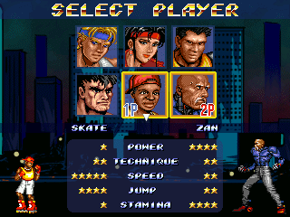

CHARACTER SELECT

A - Swap color palette
B - Cancel
C or START - Select character
L or R - Change version (when available, an arrow is shown)
SELECCIÓN DE PERSONAJE
A - Cambiar paleta de colores
B - Cancelar
C o START - Seleccionar personaje
L o R - Cambiar versión (si se puede aparece una flecha)
33